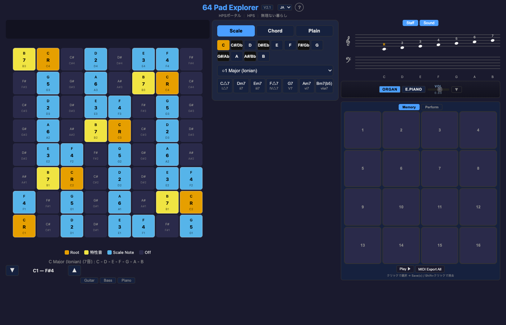
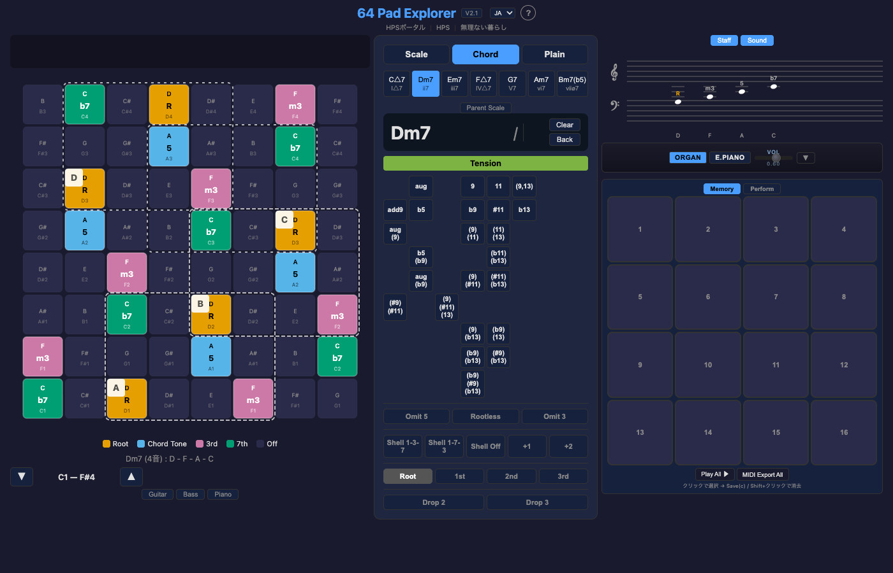
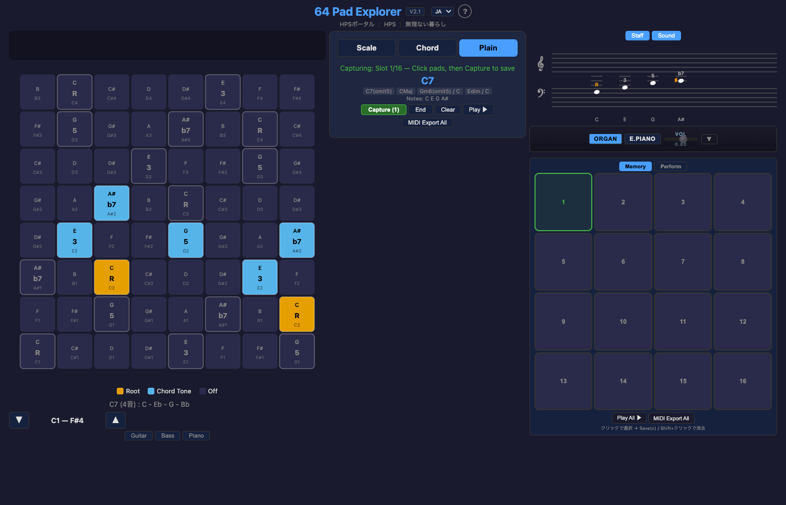
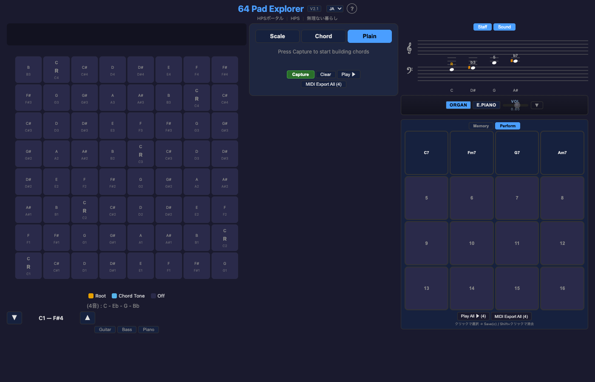
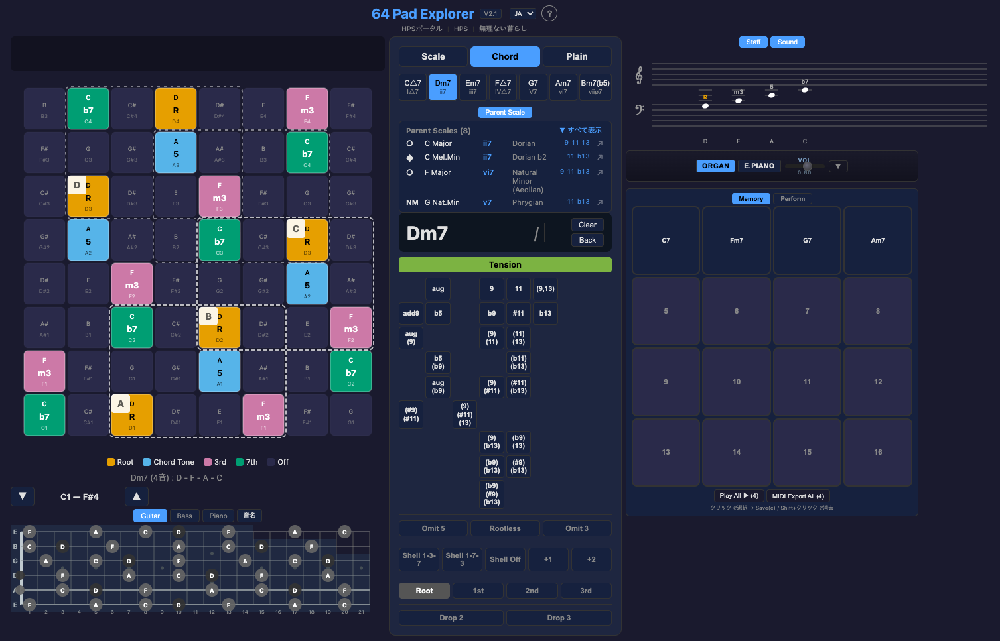

64パッド上のスケール・コード・ボイシングを探索するブラウザツール。
音源不要 — Chromeだけで音が出ます。
キーとスケールを選択すると、64パッド上にスケール音が色分けで表示されます。ダイアトニックバーからコードを選択できます。

C Major (Ionian) — ルート音(オレンジ)、スケール音(ブルー)、特性音(黄)で色分け
Root → Quality → Tension の3ステップでコードを構築。ボイシングの転回・Drop・Shell・Omitも操作できます。Parent Scaleパネルでそのコードが属しうるスケールを逆引きできます。

Dm7 — コードトーン、3rd(ピンク)、7th(グリーン)を表示。ボイシングボックスで配置候補を確認
パッドを自由にクリックしてコード名をリアルタイム判定。理論フィルタなしで探索 → 発見 → 理論を後から知るモードです。

C7 — パッドをクリックするだけでコード名を自動判定。複数候補も表示
メモリーに保存したコードを16パッドに配置し、キーボードやMIDIパッドでリアルタイム演奏できます。

Performモード — C7, Fm7, G7, Am7をスロットに保存。キーボード4×4グリッドで演奏
コードが属しうるスケールを逆引き表示。ギターフレットボードにもコードトーンが表示されます。

Dm7 → C Major (Dorian), C Mel.Min (Dorian b2), F Major (Aeolian) 等。Available Tensionsも表示
Scale スケールとダイアトニックコードを表示
Chord 3ステップでコードを構築。ボイシング操作が可能
Plain パッドを自由にクリック → コード名を自動判定
? キーで全ショートカット一覧が見られます。
1〜7 でダイアトニックコード選択、
↑↓ で転回形切替、
←→ で半音移動。
Performモードでは 1234/qwer/asdf/zxcv の4×4グリッドで演奏できます。